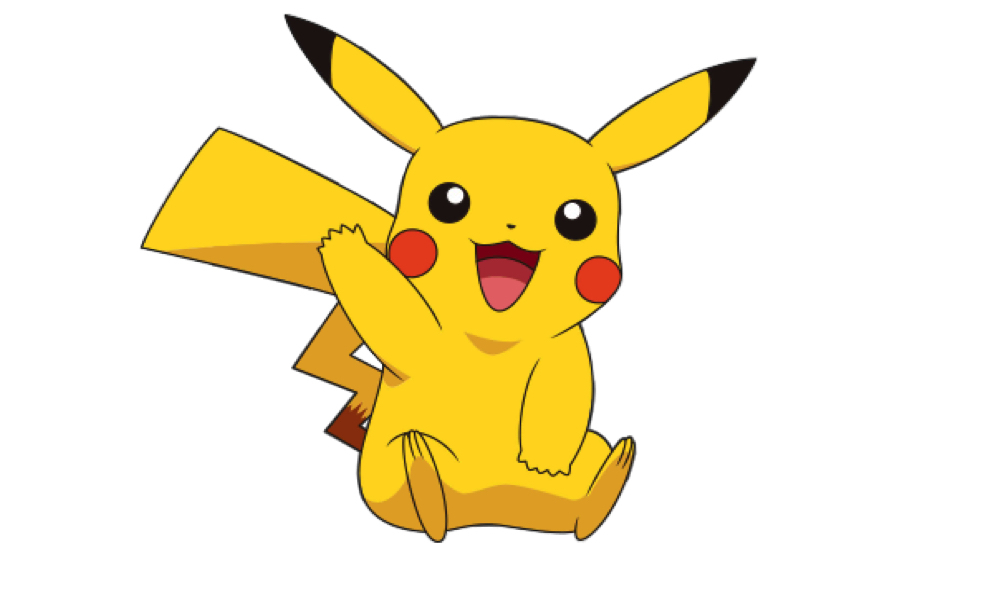

Какими бывают покемоны
Энциклопедия игры Pokemon GO!
Миллионы людей по всему миру уже вовсю охотятся за вымышленными персонажами вселенной покемонов. Пока российские пользователи ждут официального выхода игры, Hi-Tech Mail.Ru рассказывает, кого и, главное, где можно поймать в приложении Pokemon GO.
Покемоны — это странные существа, наделенными суперспособностями (от выработки электрического тока до бесполезного метания из стороны в сторону). Собственно, суть игры Pokemon GO заключается в розыске этих зверей буквально по кустам: программа с эффектом дополненной реальности запускается на смартфоне, и с помощью камеры можно увидеть неожиданно появляющиеся проекции покемонов.
Но мир покемонов устроен гораздо сложнее. Вот, например, существует всего 17 разных типов, к которым относится тот или иной покемон. Кстати, в игре встречается 151 персонаж (всего их более 700).
Смотрите покемонов и читайте описание каждого в нашей галерее: